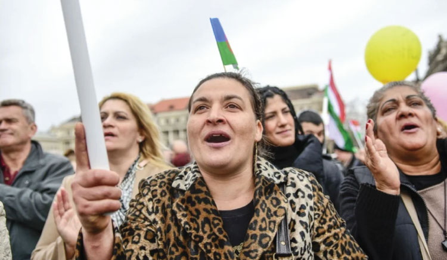

Въпреки, че ромите са най-голямото етническо малцинство в Европа, те често са изправени пред социална изолация, бедност и дискриминация. В Европейския съюз живеят приблизително 10–12 милиона роми, като около 6 милиона са граждани на държави членки. Ромите представляват значителна част от населението на България. Според актуалните данни за етническия състав, базирани на последното преброяване на населението от 2021, 4.4% от населението или 266 720 души са се самоопределили като роми, което ги поставя на второ място сред малцинствените групи, а въпросът за равенството и недискриминацията на ромите остава особено важен елемент от социалната и правозащитната политика както на национално, така и на европейско ниво.
Въпреки съществуващите законови гаранции за равенство, ромската общност продължава да се сблъсква с предразсъдъци, ограничен достъп до образование, здравни услуги, жилище и заетост.
Политиките на Европейския съюз за защита на ромите се основават на принципите на равенството и защитата на основните права. През 2020 г. Европейската комисия прие Стратегическата рамка на ЕС за равенство, приобщаване и участие на ромите (2020–2030).
Тази рамка поставя три основни цели: насърчаване на равенството и борба с дискриминацията; социално и икономическо включване; участие на ромите в обществения и политическия живот.
В рамките на тази стратегия Европейският съюз поставя конкретни цели до 2030 г., сред които: намаляване наполовина на случаите на дискриминация срещу роми; намаляване на бедността и социалното изключване; намаляване на сегрегацията в образованието.
Европейската рамка изисква от държавите членки да разработят национални стратегии, които да отразяват специфичните проблеми и нужди на ромската общност.
Основният стратегически документ в България е Националната стратегия на Република България за равенство, приобщаване и участие на ромите (2021–2030). Тя е разработена в съответствие с европейската рамка и има за цел да насърчи равните възможности и социалната интеграция на ромската общност.
Стратегията включва мерки в няколко ключови области:
• Борба с дискриминацията
България разполага със законодателна рамка за защита от дискриминация, включително Закона за защита от дискриминация, който гарантира равни права независимо от етнически произход.
Комисията за защита от дискриминация играе важна роля в разглеждането на случаи на дискриминация и насърчаването на равнопоставеността.
• Образование
Една от основните цели на националната стратегия е намаляване на сегрегацията в образованието и увеличаване на участието на ромските деца в образователната система.
Сред мерките са: образователни медиатори; програми за предотвратяване на отпадането от училище; интеграция на деца от уязвими общности.
• Заетост и социално включване
Политиките включват активни мерки на пазара на труда, професионално обучение и подкрепа за предприемачество сред ромската общност.
• Здравеопазване и жилищни условия
Стратегията предвижда подобряване на достъпа до здравни услуги и развитие на социално жилищно настаняване в общини с висока концентрация на ромско население.
• Образователни медиатори
Една от най-успешните инициативи в България е използването на образователни медиатори, които подпомагат връзката между училищата и ромските семейства. Тази практика допринася за увеличаване на посещаемостта в училище и намаляване на ранното отпадане.
• Здравни медиатори
Програмата за здравни медиатори подобрява достъпа до здравни услуги и повишава здравната култура в ромските общности.
• Проекти на неправителствени организации
Неправителствени организации работят активно за интеграцията на ромите чрез образователни програми, обучения и инициативи за социално включване. Много европейски държави прилагат успешни модели за борба с дискриминацията и насърчаване на равенството.
• Интегрирани политики
В държави като Испания и Финландия се използва интегриран подход, който комбинира образование, социални услуги и мерки за заетост.
• Участие на ромските общности
В някои държави се насърчава активното участие на ромите в процеса на вземане на решения чрез граждански организации и консултативни съвети.
• Образователни програми
Много страни прилагат програми за ранно детско образование, които имат доказан ефект върху намаляването на социалните неравенства.
Въпреки наличието на стратегии и политики, дискриминацията срещу ромите остава сериозен проблем. Основните предизвикателства включват: негативни обществени нагласи и стереотипи; сегрегация в образованието и жилищата; ограничен достъп до трудовия пазар.
За да бъдат по-ефективни политиките за равенство, е необходимо: по-активно участие на ромските общности; по-добро прилагане на антидискриминационното законодателство; устойчиво финансиране на интеграционни програми.
Равенството и недискриминацията на ромите са ключови елементи от политиките за социално включване както в България, така и в Европейския съюз. Националните стратегии и европейските рамки създават важна основа за подобряване на положението на ромската общност.
Въпреки това е необходимо по-ефективно прилагане на политиките, както и активна работа с обществото за преодоляване на стереотипите и дискриминацията. Само чрез координирани усилия между държавните институции, местните власти и гражданското общество може да се постигне реално равенство и пълноценно участие на ромите в обществения живот.